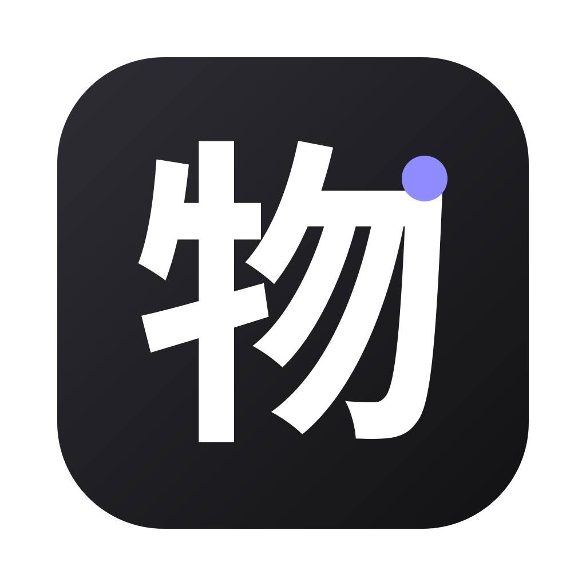
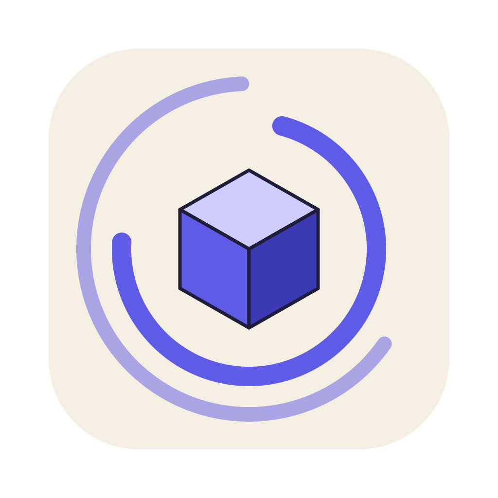
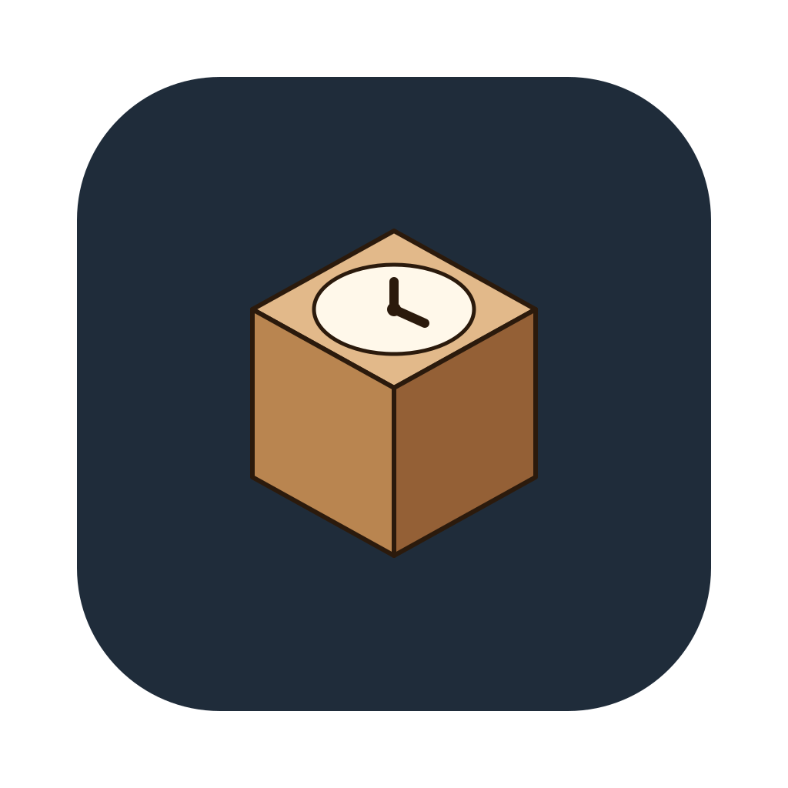
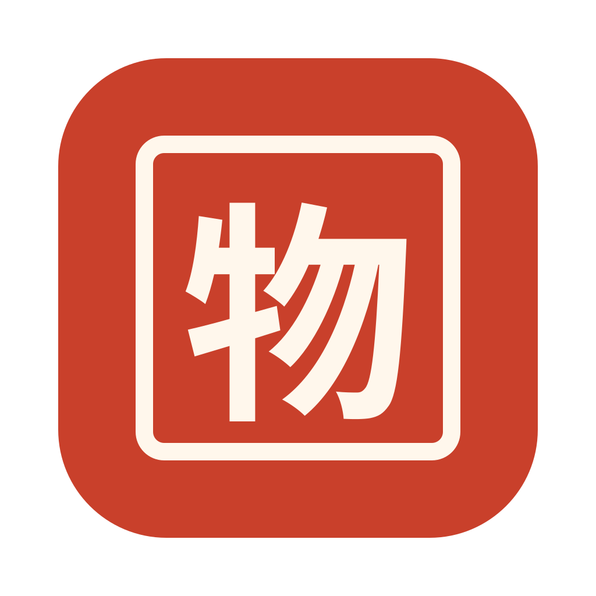
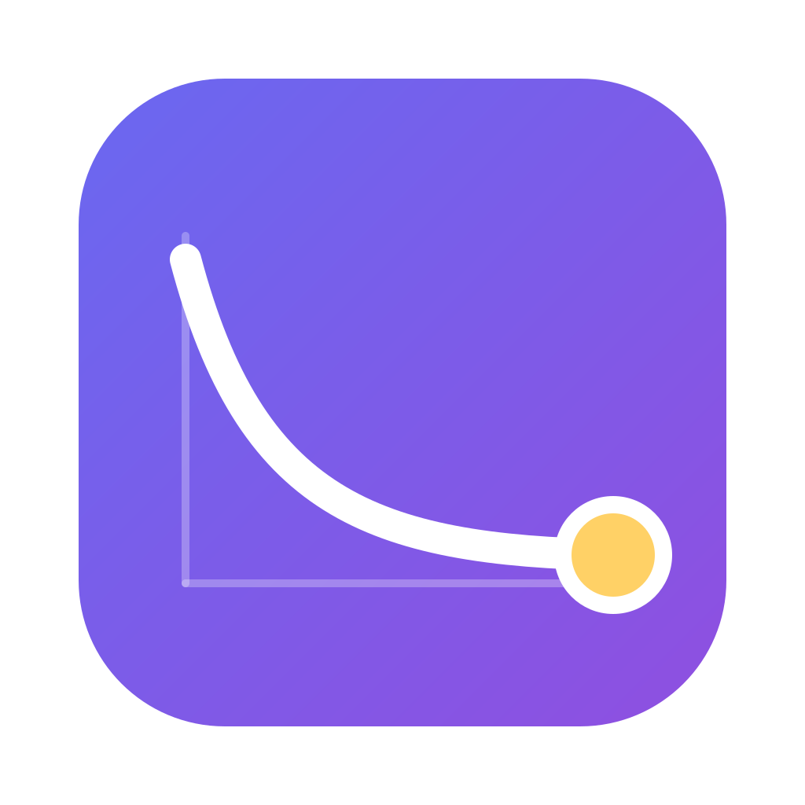

每版：大图、128/64/32/16 px 缩小测试、深色背景与名称组合。含「物」字的方案正式使用前需用开源字体转为轮廓。
深墨底，白色「物」字，右上一个时间点。中文优先，名称改成物账／物簿也不用重做。

立方体＝一件物品，外圈断开的年轮＝持有的时间。暖纸底配靛蓝。

牛皮纸箱的顶面是钟面：物品加时间。呼应应用里默认的封箱纸箱图标。

朱红底、白色印框与「物」，取「志／谱」的典籍印章意象。

三张档案卡叠起，最前一张是一件物品的记录：图、名称、持有进度。
日均成本随持有时间下降的曲线，终点是那件物品。偏数据，对应「日均」核心指标。
